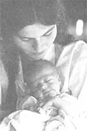

There's a growing national interest in the subjects of home birth and midwifery, as couples who are about to have children feel an urge to return to more natural and appropriate birthing practices. The idea of an aware, drugless childbirth . . . in the comfort and security of one's own home ... attended by an experienced midwife ... with one's husband and any previous children in the family close by to greet the new infant ... is one that just 'feels right" to an ever increasing number of mothers-to-be.
In Europe, as in most other parts of the world, the majority of births still take place in the home. Only in America do the greater number now occur in hospitals. But this peculiarity of our culture is being widely reexamined, thanks to people like Stephen Gaskin (see The Plowboy Papers, MOTHER NO. 45) and his wife Ina May of The Farm in Tennessee.
Mrs. Gaskin's 1975 book-Spiritual Midwifery?now in a second, expanded edition, has played an important part in the back-to-natural-birth trend. For?even if you don't go along with every tenet of the lifestyle followed at The Farm-it's hard to fault the success of the community's home birth program, which after more than 750 births boasts statistics far superior to those of many major hospitals.
Ina May wrote the following article expressly for MOTHER's readers, as a basic introduction to her far lengthier book. We think you'll find it worthwhile information ... whether you're an expectant parent or not.
Portions of this article have been axtracted? by permission-from Spiritual Midwifery by Ins May Gaskin, copyright 1978 by The Book Publishing Company, Summertown , Tennesse 38483. The book is available (clothbound $12.50 and in paperback for $8.50) from the publisher, from any good bookstore, or (in paperback only, for $8.50 plus 95 cents shipping and handling) from Mother's Bookshelf.
We are a group of 11 empirical midwives (I use "empirical" instead of "lay" because I like the connotations better . . . "lay" implies some kind of priesthood, which is just what we're trying to get away from) who deliver babies and provide primary health care for our spiritual community of 1,100 longhaired vegetarians.
We have been a self-sufficient farming community since 1971, when the first 300 of us settled on our land near Summertown, Tennessee. We've been practicing spiritual midwifery-for ourselves and for a lot of other people-for about seven years, delivering children naturally and at home by the techniques we've developed. We feel strongly that birth is a holy sacrament, that it belongs to the family, and that the family's rights should not be usurped in this part of our lives.
The practice of midwifery is a huge wave that's gathering now, all over the planet. In fact, 80 percent of the world's population customarily brings its babies into the world with the help of midwives. It's only in the technological countries that the usual practice is to have men delivering babies and men having the main say-so about how pregnancy, childbirth, and child raising are managed.
We feel that the people who are doing the work should be the ones to say how it is done. I really believe that-if every woman felt it was safe-deep in her heart she'd prefer to have her gynecological care-her baby-having and all that? handled mainly by women, who tend to understand better.
A typical birth at The Farm costs us about $15 for materials. For religious reasons, we don't charge money for delivering babies, so-at that $15 rate? the amount of money we've saved for ourselves and for the couples and single mothers who've come to have their babies here amounts to well over a million dollars.
We were forced to develop our own primary health care system out of necessity: The nearest doctor was more than 15 miles away. So far, we've provided an outpatient clinic, a neonatal intensive care nursery which is equipped-with incubators, bilirubin lights, oxygen therapy, and so forth-to care for even premature babies, an infirmary, a medical laboratory, a pharmacy, and two ambulances. The facilities are staffed by a physician, six nurses, the midwife crew, two paramedics, 40 state-recognized Emergency Medical Technicians, and about 50 trainees ... all members of our community.
Prepare yourselfspiritually. As soon as you discover you're pregnant, it's time to start getting ready, because you're going to be accepting responsibility for another life ... a pure new consciousness.
Right away, you should be thinking about your nutrition so that you're eating what you need to in order to grow a good baby and stay healthy, and to go through the work that you have ahead of you.
We firmly believe that the way to get the best nutrition is to be vegetarian. We've been looking at it empirically for over seven years, seeing how healthy our children are. We are total vegetarians, and because we don't eat milk or eggs we supplement the foods that we do consume with vitamin B 12' Our diet is based on soybeans, and we eat a lot of beans in many different forms. [See "How We Make and Eat Tempeh Down on The Farm", MOTHER NO. 47. The community also publishes The Farm Vegetarian Cookbook-available from the same sources listed for Spiritual Midwifery on page 73? which details the fundamentals of their diet-The Editors.]
We've had only two cases of toxemia in pregnancy, compared to a national average of about 33%. We think our diet has a lot to do with that.
We don't smoke cigarettes, and if you're a smoker we hope you'll stop: It's not good for you or for your developing baby. Nor should you drink alcoholic beverages if you're pregnant, because there's a very high incidence of congenital abnormalities in babies born to people who drink alcohol.
As for exercise, the amount you get if you're not in the leisure class seems to suffice pretty well. Walking is probably the best exercise of all, though swimming's good too. But mainly you just need to carry on an active life. Of course, you're going to slow down a little bit because you'll be weighing a few more pounds than you ordinarily do.
There's no need to do breathing exercises ... in fact, you can become rigid and have preconceived notions from doing certain such mechanical exercises. The midwife, the birth attendants, and the husband can all help the mother in proper breathing when that becomes necessary.
It's an important part of birth preparation for a couple to make special efforts to get along well with each other. If you don't get along together well you'll probably have a hard time with natural childbirth, because the nature of birthing energy is that it works well with love ... while less harmonious vibrations interfere with the progress of a woman in labor.
So- if you're in the habit of not telling each other how you feel and of stacking up small bad feelings-you should make an effort now to say what you feel. And say it with love and with a sense of cooperation, and with the understanding that you're going to work your differences out and come to an agreement. If you need help, you might consult a friend: Sometimes a third person's viewpoint is all it takes to resolve a situation.
Besides all these ways of taking care of yourself, you need regular prenatal care from your midwife or your doctor. You should make:
At least one visit in the first trimester
At least two visits in the second, provided there are no complications
At least four visits in the last trimester. Weekly visits in the last month of pregnancy are advisable, so that your midwife or doctor can check the baby's position and presentation and keep track of the infants size in relation to your pelvic size.
During these visits your midwife or doctor will check your blood pressure and the albumin (protein) in your urine to see if your kidneys are stressed. They'll also check your urine for glucose (sugar), which would indicate a diabetic or temporary diabetic state. And she or he will keep track of your blood-iron levels and weight gain.
If your blood is Rh negative, you should be tested periodically for antibodies. These are all important tests and observations, and are a necessary part of a healthy pregnancy.
These days, to find a midwife requires a good nose in this country, because there just aren't that many of them ... but you can locate one if you ask around.
You should keep looking until you find someone that you feel comfortable with (you'll be glad you did when it's time to have the baby). And don't be afraid to check your midwife out: Talk with her at length about how she'll handle the birthing, about her support and medical backup, whether she has access to a hospital if it's needed, how much she charges, how much -experience she's had. Don't hold back. Keep asking questions until you're absolutely sure you trust her. If you can, get in touch with some of the ladies she's delivered and talk to them, too.
Sometimes you see something called a natural birth in which the husband is wearing a mask and a cap and nervously stroking his wife's forehead while she hugs her belly. That is not our idea of a natural childbirth. We've found that it works well to have the husband there, but in an actively supportive role ... actually helping the mother through the parturition process.
One of the most important things to realize is that it can take a while. Some of our longest labors have been with mothers who were so impatient to see their babies that they couldn't relax long enough to have them!
We work in teams, usually with one or two midwives and one or two trainees at a birthing. Someone is always with the laboring woman from the time regular contractions begin. We let the mother move around as she wishes. She can get up and take a walk if she feels like it, or do anything that helps keep her energy intact. We wouldn't, though, have a neighbor come over to visit and small-talk, and we probably wouldn't have her pick up her knitting, because that would take her attention away from what's going on. But getting up or moving around or just sitting up, finding a comfortable position, is a normal part of giving birth.
Usually the mother is on her bed, and when it's time to push, her husband is sitting behind her, helping support her in a semi-reclining position (about a 450 angle). She usually pushes the baby out in this position, but sometimes the mother would rather squat or stand during the pushing stage.
Sometimes you get into a situation where the energy is stalemated. What do you do if it's been a while and labor isn't progessing? One thing that helps in such cases is for people to speak their minds. The energy doesn't work well if someone feels uncomfortable and doesn't talk about it, because then everyone gets more uncomfortable. So-if the midwife isn't already leading the discussion -certainly the mother should bring it up . . . or the husband, if he notices.
Telling the truth about what you're feeling without unloading on other people in the process-tends to free up psychic energy (which is the same as birthing energy) and hasten the delivery. So somebody- preferably the midwife-needs to take responsibility for the vibrations, making sure that it feels holy, because you're doing this for the baby and the baby is holy. Every baby is.
As soon as the newborn's breathing is well established, the midwife gives the baby to the mother, who usually holds her infant during delivery of the placenta and takes care of him or her from then on.
The far-out thing seems to be that almost every mother-if she's allowed to be with her baby right from the first-seems to know just what to do even if it's her first child, because the baby tells her. A woman who has just given birth is in a really open and receptive state of mind, and doesn't need to be told things in words or by demonstration. She can figure it out on the spot. But sometimes a lady has enough misconceptions or was raised funny enough that she needs some assistance, and this is easily given by another lady who's gone through the same experience.
As a community, we don't have breastfeeding problems. You can count them on one handout of 750 birthings?and when problems have occurred it's just been tender nipples or something like that. When it's assumed by a group of ladies that breastfeeding's OK and that they don't have to feel worried or inhibited about doing it, the emotional support that they give each other seems to be all they need. They don't have to read long books about it.
We think it's a good idea to nurse the baby? when the nipples have been cleaned-just as soon after the birth as the mother wants to.
The mother ought to hold her new baby a whole lot. The first few hours?and especially the first 30 minutes-of an infant's life are of extreme importance in the development of the relationship between mother and baby. It's crucial that the two have no unnecessary interferences during this time, and that the mother hold the baby and look into his or her eyes (yes, a newborn can see) as much as possible. Uninterrupted skin-to-skin contact seems to foster a good mother-child relationship.
Marshall Klaus and John Kennell of Case Western Reserve University have been doing research in this for years, and their work has shown that interruptions and separation during this critical bonding period have adverse effects on the relationship and on the further development of the baby. Yet the good effects demonstrated where infants have had this uninterrupted time with their mothers have ranged from higher survival rate, higher intelligence, and greater adaptability to more friendliness and a more affectionate mother-child relationship. This exactly corroborates our own observations derived from delivering and caring for so many babies.
We observe that there is a process of bonding between father and child as well. Fathers who have witnessed the births of their children seem to form an especially close attachment to these children, and-like their mates-have profound spiritual experiences at the birthings.
This is an important issue, because I think it strikes at the heart of some of our biggest problems in this culture. Given the kind of planetary consciousness we're in, there are obviously a lot of things we need to change in order to feel that the world will be a safe place for our children and grandchildren and great-grandchildren. Several of the men who've attended the births of their children on The Farm have said that if every man in this world could only see his child being born, there would be fewer wars .
It's a human right that the family is the principal in the sacrament of birth and death. This right should not be usurped by a profit-oriented system. Huge amounts of money and energy are being wasted in the delivery rooms of hospitals, through people actually monopolizing that critical time in all these people's lives and putting their own imprint on these new souls.
When the family is divided at the time of birth (as in common hospital practice), people come out of childbirth feeling neurotic, rather than fulfilled and sane. Natural birth, uninterfered with, is one of the great sources of sanity that we have in our society. We need to do everything we can to ensure that it is protected at home ... and-when you have a birth in the hospital-to see that the family's rights are respected.
Midwifery, then, is one of our direct paths to greater reverence for life ... and all that's needed to make it work is simple love and cooperation. It can't happen out of an atmosphere of competition, struggle, or legal hassle. It has to be a religious coming together.
The Farm publishes a newsletter called The Practicing Midwife, which comes out four times annually. Subscriptions are $5.00 per year, and checks can be made out to The Practicing Midwife, 156 Drakes Lane, Sum mertown, Tenn. 38483. Also, VideoFarm (at the some address) offers a 26-minute, 3/4-inch black-and-white videotape called "Cornelia's Birthing", available for rental ($35) or purchase ($150). Checks can be made out to VideoFarm.?The Editors.
|
 |
|
|